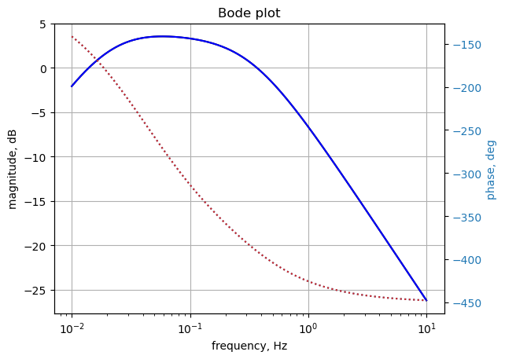

import os
from sympy import *
import numpy as np
from scipy import signal
import matplotlib.pyplot as plt
init_printing()14 test_11
This circuit is from [1], page 444, problem 16.15. The circuit was drawn in LTSpice and the circuit nodes are labeled. Find the network function, H(s)=V2(s)/V3(s). I made some changes to the values, phases of the windings and coupling constants.

29 Nov 2023:
Problem - When the D matrix is built, independent voltage sources are processed in the data frame order when building the D matrix. If the voltage source followed element L, H, F, K types in the netlist, a row was inserted that put the voltage source in a different row in relation to it’s position in the Ev matrix. This would cause the node attached to the terminal of the voltage source to be zero volts. Solution - added code to move voltage source types to the beginning of the net list data frame before any calculations are performed.
Need to verify during testing that independednt current sources, type I, do not also need this fix.
The netlist generated by LTSpice:
* test_11.asc
L1 1 0 10 Rser=0
L2 0 2 20 Rser=0
L3 4 0 30 Rser=0
R2 2 0 5
R3 4 0 10
R1 1 3 2
V1 3 0 AC 10
K1 L1 L2 0.2
K2 L1 L3 0.8
K3 L2 L3 0.5
* ;.ac list 0.159154943091895
.ac dec 100 0.01 10
.backanno
.endThe netlist generated by LTSpice was modified to remove Rser=0 from inductor lines and ‘AC 10’ from V1. This is the modified net list:
* test_11.asc
L1 1 0 10
L2 0 2 20
L3 4 0 30
R2 2 0 5
R3 4 0 10
R1 1 3 2
V1 3 0 10
K1 L1 L2 0.2
K2 L1 L3 0.8
K3 L2 L3 0.5
.ac list 0.159154943091895
* ;.ac dec 100 0.01 10
.backanno
.end
* test_11.asc
V1 3 0 10
L1 1 0 10
L2 0 2 20
L3 4 0 30
R2 2 0 5
R3 4 0 10
R1 1 3 2
*V1 3 0 10 }---- change here
K1 L1 L2 0.2
K2 L1 L3 0.8
K3 L2 L3 0.5
.ac list 0.159154943091895
* ;.ac dec 100 0.01 10
.backanno
.end
See notes at the end for debugging steps.
This netlist is read into the Symbolic Modified Nodal Analysis Jupyter notebook and the following circuit equations were generated.
Orginal netlist generated with V1 in listing near the bottom.
v₁ v₃
I_L1 + ── - ── = 0
R₁ R₁
v₂
-I_L2 + ── = 0
R₂
v₁ v₃
I_V1 - ── + ── = 0
R₁ R₁
v₄
I_L3 + ── = 0
R₃
-I_L1⋅L₁⋅s - I_L2⋅M₁⋅s - I_L3⋅M₂⋅s + v₁ = V₁ <--- difference
-I_L1⋅M₁⋅s - I_L2⋅L₂⋅s - I_L3⋅M₃⋅s - v₂ = 0
-I_L1⋅M₂⋅s - I_L2⋅M₃⋅s - I_L3⋅L₃⋅s + v₄ = 0
v₃ = 0 <--error is here
Netlist order of V1 changed
v₁ v₃
I_L1 + ── - ── = 0
R₁ R₁
v₂
-I_L2 + ── = 0
R₂
v₁ v₃
I_V1 - ── + ── = 0
R₁ R₁
v₄
I_L3 + ── = 0
R₃
v₃ = V₁ }--- difference
-I_L1⋅L₁⋅s - I_L2⋅M₁⋅s - I_L3⋅M₂⋅s + v₁ = 0
-I_L1⋅M₁⋅s - I_L2⋅L₂⋅s - I_L3⋅M₃⋅s - v₂ = 0
-I_L1⋅M₂⋅s - I_L2⋅M₃⋅s - I_L3⋅L₃⋅s + v₄ = 0
Reference:
1. D. E. Johnson, J. L. Hilburn, and J. R. Johnson, Basic Electric Circuit Analysis, Prentice-Hall, Inc. 1978
Copy the text strings generated by the Symbolic Modified Nodal Analysis Jupyter notebook to the cell below.
R3, v4, I_L1, R2, M3, v2, v3, R1, v1, M1, L1, I_V1, L2, I_L3, s, L3, M2, V1, I_L2 = symbols(' R3 v4 I_L1 R2 M3 v2 v3 R1 v1 M1 L1 I_V1 L2 I_L3 s L3 M2 V1 I_L2 ')
A = Matrix([[1/R1, 0, -1/R1, 0, 0, 1, 0, 0], [0, 1/R2, 0, 0, 0, 0, -1, 0], [-1/R1, 0, 1/R1, 0, 1, 0, 0, 0], [0, 0, 0, 1/R3, 0, 0, 0, 1], [0, 0, 1, 0, 0, 0, 0, 0], [1, 0, 0, 0, 0, -L1*s, -M1*s, -M2*s], [0, -1, 0, 0, 0, -M1*s, -L2*s, -M3*s], [0, 0, 0, 1, 0, -M2*s, -M3*s, -L3*s]])
X = Matrix( [v1, v2, v3, v4, I_V1, I_L1, I_L2, I_L3] )
Z = Matrix( [0, 0, 0, 0, V1, 0, 0, 0] )
equ = Eq(A*X,Z)
equ\(\displaystyle \left[\begin{matrix}I_{L1} + \frac{v_{1}}{R_{1}} - \frac{v_{3}}{R_{1}}\\- I_{L2} + \frac{v_{2}}{R_{2}}\\I_{V1} - \frac{v_{1}}{R_{1}} + \frac{v_{3}}{R_{1}}\\I_{L3} + \frac{v_{4}}{R_{3}}\\v_{3}\\- I_{L1} L_{1} s - I_{L2} M_{1} s - I_{L3} M_{2} s + v_{1}\\- I_{L1} M_{1} s - I_{L2} L_{2} s - I_{L3} M_{3} s - v_{2}\\- I_{L1} M_{2} s - I_{L2} M_{3} s - I_{L3} L_{3} s + v_{4}\end{matrix}\right] = \left[\begin{matrix}0\\0\\0\\0\\V_{1}\\0\\0\\0\end{matrix}\right]\)
14.1 Symbolic solution
symbolic_solution = solve(equ,X)
symbolic_solution\(\displaystyle \left\{ I_{L1} : \frac{L_{2} L_{3} V_{1} s^{2} + L_{2} R_{3} V_{1} s + L_{3} R_{2} V_{1} s - M_{3}^{2} V_{1} s^{2} + R_{2} R_{3} V_{1}}{L_{1} L_{2} L_{3} s^{3} + L_{1} L_{2} R_{3} s^{2} + L_{1} L_{3} R_{2} s^{2} - L_{1} M_{3}^{2} s^{3} + L_{1} R_{2} R_{3} s + L_{2} L_{3} R_{1} s^{2} - L_{2} M_{2}^{2} s^{3} + L_{2} R_{1} R_{3} s - L_{3} M_{1}^{2} s^{3} + L_{3} R_{1} R_{2} s - M_{1}^{2} R_{3} s^{2} + 2 M_{1} M_{2} M_{3} s^{3} - M_{2}^{2} R_{2} s^{2} - M_{3}^{2} R_{1} s^{2} + R_{1} R_{2} R_{3}}, \ I_{L2} : \frac{- L_{3} M_{1} V_{1} s^{2} - M_{1} R_{3} V_{1} s + M_{2} M_{3} V_{1} s^{2}}{L_{1} L_{2} L_{3} s^{3} + L_{1} L_{2} R_{3} s^{2} + L_{1} L_{3} R_{2} s^{2} - L_{1} M_{3}^{2} s^{3} + L_{1} R_{2} R_{3} s + L_{2} L_{3} R_{1} s^{2} - L_{2} M_{2}^{2} s^{3} + L_{2} R_{1} R_{3} s - L_{3} M_{1}^{2} s^{3} + L_{3} R_{1} R_{2} s - M_{1}^{2} R_{3} s^{2} + 2 M_{1} M_{2} M_{3} s^{3} - M_{2}^{2} R_{2} s^{2} - M_{3}^{2} R_{1} s^{2} + R_{1} R_{2} R_{3}}, \ I_{L3} : \frac{- L_{2} M_{2} V_{1} s^{2} + M_{1} M_{3} V_{1} s^{2} - M_{2} R_{2} V_{1} s}{L_{1} L_{2} L_{3} s^{3} + L_{1} L_{2} R_{3} s^{2} + L_{1} L_{3} R_{2} s^{2} - L_{1} M_{3}^{2} s^{3} + L_{1} R_{2} R_{3} s + L_{2} L_{3} R_{1} s^{2} - L_{2} M_{2}^{2} s^{3} + L_{2} R_{1} R_{3} s - L_{3} M_{1}^{2} s^{3} + L_{3} R_{1} R_{2} s - M_{1}^{2} R_{3} s^{2} + 2 M_{1} M_{2} M_{3} s^{3} - M_{2}^{2} R_{2} s^{2} - M_{3}^{2} R_{1} s^{2} + R_{1} R_{2} R_{3}}, \ I_{V1} : \frac{- L_{2} L_{3} V_{1} s^{2} - L_{2} R_{3} V_{1} s - L_{3} R_{2} V_{1} s + M_{3}^{2} V_{1} s^{2} - R_{2} R_{3} V_{1}}{L_{1} L_{2} L_{3} s^{3} + L_{1} L_{2} R_{3} s^{2} + L_{1} L_{3} R_{2} s^{2} - L_{1} M_{3}^{2} s^{3} + L_{1} R_{2} R_{3} s + L_{2} L_{3} R_{1} s^{2} - L_{2} M_{2}^{2} s^{3} + L_{2} R_{1} R_{3} s - L_{3} M_{1}^{2} s^{3} + L_{3} R_{1} R_{2} s - M_{1}^{2} R_{3} s^{2} + 2 M_{1} M_{2} M_{3} s^{3} - M_{2}^{2} R_{2} s^{2} - M_{3}^{2} R_{1} s^{2} + R_{1} R_{2} R_{3}}, \ v_{1} : \frac{L_{1} L_{2} L_{3} V_{1} s^{3} + L_{1} L_{2} R_{3} V_{1} s^{2} + L_{1} L_{3} R_{2} V_{1} s^{2} - L_{1} M_{3}^{2} V_{1} s^{3} + L_{1} R_{2} R_{3} V_{1} s - L_{2} M_{2}^{2} V_{1} s^{3} - L_{3} M_{1}^{2} V_{1} s^{3} - M_{1}^{2} R_{3} V_{1} s^{2} + 2 M_{1} M_{2} M_{3} V_{1} s^{3} - M_{2}^{2} R_{2} V_{1} s^{2}}{L_{1} L_{2} L_{3} s^{3} + L_{1} L_{2} R_{3} s^{2} + L_{1} L_{3} R_{2} s^{2} - L_{1} M_{3}^{2} s^{3} + L_{1} R_{2} R_{3} s + L_{2} L_{3} R_{1} s^{2} - L_{2} M_{2}^{2} s^{3} + L_{2} R_{1} R_{3} s - L_{3} M_{1}^{2} s^{3} + L_{3} R_{1} R_{2} s - M_{1}^{2} R_{3} s^{2} + 2 M_{1} M_{2} M_{3} s^{3} - M_{2}^{2} R_{2} s^{2} - M_{3}^{2} R_{1} s^{2} + R_{1} R_{2} R_{3}}, \ v_{2} : \frac{- L_{3} M_{1} R_{2} V_{1} s^{2} - M_{1} R_{2} R_{3} V_{1} s + M_{2} M_{3} R_{2} V_{1} s^{2}}{L_{1} L_{2} L_{3} s^{3} + L_{1} L_{2} R_{3} s^{2} + L_{1} L_{3} R_{2} s^{2} - L_{1} M_{3}^{2} s^{3} + L_{1} R_{2} R_{3} s + L_{2} L_{3} R_{1} s^{2} - L_{2} M_{2}^{2} s^{3} + L_{2} R_{1} R_{3} s - L_{3} M_{1}^{2} s^{3} + L_{3} R_{1} R_{2} s - M_{1}^{2} R_{3} s^{2} + 2 M_{1} M_{2} M_{3} s^{3} - M_{2}^{2} R_{2} s^{2} - M_{3}^{2} R_{1} s^{2} + R_{1} R_{2} R_{3}}, \ v_{3} : V_{1}, \ v_{4} : \frac{L_{2} M_{2} R_{3} V_{1} s^{2} - M_{1} M_{3} R_{3} V_{1} s^{2} + M_{2} R_{2} R_{3} V_{1} s}{L_{1} L_{2} L_{3} s^{3} + L_{1} L_{2} R_{3} s^{2} + L_{1} L_{3} R_{2} s^{2} - L_{1} M_{3}^{2} s^{3} + L_{1} R_{2} R_{3} s + L_{2} L_{3} R_{1} s^{2} - L_{2} M_{2}^{2} s^{3} + L_{2} R_{1} R_{3} s - L_{3} M_{1}^{2} s^{3} + L_{3} R_{1} R_{2} s - M_{1}^{2} R_{3} s^{2} + 2 M_{1} M_{2} M_{3} s^{3} - M_{2}^{2} R_{2} s^{2} - M_{3}^{2} R_{1} s^{2} + R_{1} R_{2} R_{3}}\right\}\)
left_side = list(symbolic_solution.keys())
right_side = list(symbolic_solution.values())
for i in range(len(symbolic_solution)):
pprint(Eq(left_side[i],right_side[i])) 3 2 2
L₁⋅L₂⋅L₃⋅V₁⋅s + L₁⋅L₂⋅R₃⋅V₁⋅s + L₁⋅L₃⋅R₂⋅V₁⋅s - L₁⋅M₃
v₁ = ─────────────────────────────────────────────────────────────────────────
3 2 2 2 3
L₁⋅L₂⋅L₃⋅s + L₁⋅L₂⋅R₃⋅s + L₁⋅L₃⋅R₂⋅s - L₁⋅M₃ ⋅s + L₁⋅R₂⋅R₃⋅s + L₂⋅L₃⋅
2 3 2 3 2 3 2 2
⋅V₁⋅s + L₁⋅R₂⋅R₃⋅V₁⋅s - L₂⋅M₂ ⋅V₁⋅s - L₃⋅M₁ ⋅V₁⋅s - M₁ ⋅R₃⋅V₁⋅s + 2⋅M₁⋅M₂
──────────────────────────────────────────────────────────────────────────────
2 2 3 2 3 2 2
R₁⋅s - L₂⋅M₂ ⋅s + L₂⋅R₁⋅R₃⋅s - L₃⋅M₁ ⋅s + L₃⋅R₁⋅R₂⋅s - M₁ ⋅R₃⋅s + 2⋅M₁⋅M₂⋅
3 2 2
⋅M₃⋅V₁⋅s - M₂ ⋅R₂⋅V₁⋅s
────────────────────────────────────────
3 2 2 2 2
M₃⋅s - M₂ ⋅R₂⋅s - M₃ ⋅R₁⋅s + R₁⋅R₂⋅R₃
-
v₂ = ─────────────────────────────────────────────────────────────────────────
3 2 2 2 3
L₁⋅L₂⋅L₃⋅s + L₁⋅L₂⋅R₃⋅s + L₁⋅L₃⋅R₂⋅s - L₁⋅M₃ ⋅s + L₁⋅R₂⋅R₃⋅s + L₂⋅L₃⋅
2 2
L₃⋅M₁⋅R₂⋅V₁⋅s - M₁⋅R₂⋅R₃⋅V₁⋅s + M₂⋅M₃⋅R₂⋅V₁⋅s
──────────────────────────────────────────────────────────────────────────────
2 2 3 2 3 2 2
R₁⋅s - L₂⋅M₂ ⋅s + L₂⋅R₁⋅R₃⋅s - L₃⋅M₁ ⋅s + L₃⋅R₁⋅R₂⋅s - M₁ ⋅R₃⋅s + 2⋅M₁⋅M₂⋅
────────────────────────────────────────
3 2 2 2 2
M₃⋅s - M₂ ⋅R₂⋅s - M₃ ⋅R₁⋅s + R₁⋅R₂⋅R₃
v₃ = V₁
L
v₄ = ─────────────────────────────────────────────────────────────────────────
3 2 2 2 3
L₁⋅L₂⋅L₃⋅s + L₁⋅L₂⋅R₃⋅s + L₁⋅L₃⋅R₂⋅s - L₁⋅M₃ ⋅s + L₁⋅R₂⋅R₃⋅s + L₂⋅L₃⋅
2 2
₂⋅M₂⋅R₃⋅V₁⋅s - M₁⋅M₃⋅R₃⋅V₁⋅s + M₂⋅R₂⋅R₃⋅V₁⋅s
──────────────────────────────────────────────────────────────────────────────
2 2 3 2 3 2 2
R₁⋅s - L₂⋅M₂ ⋅s + L₂⋅R₁⋅R₃⋅s - L₃⋅M₁ ⋅s + L₃⋅R₁⋅R₂⋅s - M₁ ⋅R₃⋅s + 2⋅M₁⋅M₂⋅
────────────────────────────────────────
3 2 2 2 2
M₃⋅s - M₂ ⋅R₂⋅s - M₃ ⋅R₁⋅s + R₁⋅R₂⋅R₃
- L₂⋅L
I_V1 = ───────────────────────────────────────────────────────────────────────
3 2 2 2 3
L₁⋅L₂⋅L₃⋅s + L₁⋅L₂⋅R₃⋅s + L₁⋅L₃⋅R₂⋅s - L₁⋅M₃ ⋅s + L₁⋅R₂⋅R₃⋅s + L₂⋅L
2 2 2
₃⋅V₁⋅s - L₂⋅R₃⋅V₁⋅s - L₃⋅R₂⋅V₁⋅s + M₃ ⋅V₁⋅s - R₂⋅R₃⋅V₁
──────────────────────────────────────────────────────────────────────────────
2 2 3 2 3 2 2
₃⋅R₁⋅s - L₂⋅M₂ ⋅s + L₂⋅R₁⋅R₃⋅s - L₃⋅M₁ ⋅s + L₃⋅R₁⋅R₂⋅s - M₁ ⋅R₃⋅s + 2⋅M₁⋅M
──────────────────────────────────────────
3 2 2 2 2
₂⋅M₃⋅s - M₂ ⋅R₂⋅s - M₃ ⋅R₁⋅s + R₁⋅R₂⋅R₃
L₂⋅L₃
I_L1 = ───────────────────────────────────────────────────────────────────────
3 2 2 2 3
L₁⋅L₂⋅L₃⋅s + L₁⋅L₂⋅R₃⋅s + L₁⋅L₃⋅R₂⋅s - L₁⋅M₃ ⋅s + L₁⋅R₂⋅R₃⋅s + L₂⋅L
2 2 2
⋅V₁⋅s + L₂⋅R₃⋅V₁⋅s + L₃⋅R₂⋅V₁⋅s - M₃ ⋅V₁⋅s + R₂⋅R₃⋅V₁
──────────────────────────────────────────────────────────────────────────────
2 2 3 2 3 2 2
₃⋅R₁⋅s - L₂⋅M₂ ⋅s + L₂⋅R₁⋅R₃⋅s - L₃⋅M₁ ⋅s + L₃⋅R₁⋅R₂⋅s - M₁ ⋅R₃⋅s + 2⋅M₁⋅M
──────────────────────────────────────────
3 2 2 2 2
₂⋅M₃⋅s - M₂ ⋅R₂⋅s - M₃ ⋅R₁⋅s + R₁⋅R₂⋅R₃
I_L2 = ───────────────────────────────────────────────────────────────────────
3 2 2 2 3
L₁⋅L₂⋅L₃⋅s + L₁⋅L₂⋅R₃⋅s + L₁⋅L₃⋅R₂⋅s - L₁⋅M₃ ⋅s + L₁⋅R₂⋅R₃⋅s + L₂⋅L
2 2
- L₃⋅M₁⋅V₁⋅s - M₁⋅R₃⋅V₁⋅s + M₂⋅M₃⋅V₁⋅s
──────────────────────────────────────────────────────────────────────────────
2 2 3 2 3 2 2
₃⋅R₁⋅s - L₂⋅M₂ ⋅s + L₂⋅R₁⋅R₃⋅s - L₃⋅M₁ ⋅s + L₃⋅R₁⋅R₂⋅s - M₁ ⋅R₃⋅s + 2⋅M₁⋅M
──────────────────────────────────────────
3 2 2 2 2
₂⋅M₃⋅s - M₂ ⋅R₂⋅s - M₃ ⋅R₁⋅s + R₁⋅R₂⋅R₃
I_L3 = ───────────────────────────────────────────────────────────────────────
3 2 2 2 3
L₁⋅L₂⋅L₃⋅s + L₁⋅L₂⋅R₃⋅s + L₁⋅L₃⋅R₂⋅s - L₁⋅M₃ ⋅s + L₁⋅R₂⋅R₃⋅s + L₂⋅L
2 2
- L₂⋅M₂⋅V₁⋅s + M₁⋅M₃⋅V₁⋅s - M₂⋅R₂⋅V₁⋅s
──────────────────────────────────────────────────────────────────────────────
2 2 3 2 3 2 2
₃⋅R₁⋅s - L₂⋅M₂ ⋅s + L₂⋅R₁⋅R₃⋅s - L₃⋅M₁ ⋅s + L₃⋅R₁⋅R₂⋅s - M₁ ⋅R₃⋅s + 2⋅M₁⋅M
──────────────────────────────────────────
3 2 2 2 2
₂⋅M₃⋅s - M₂ ⋅R₂⋅s - M₃ ⋅R₁⋅s + R₁⋅R₂⋅R₃The transfer function H(s)=V2(s)/V1
symbolic_solution[v2]/V1\(\displaystyle \frac{- L_{3} M_{1} R_{2} V_{1} s^{2} - M_{1} R_{2} R_{3} V_{1} s + M_{2} M_{3} R_{2} V_{1} s^{2}}{V_{1} \left(L_{1} L_{2} L_{3} s^{3} + L_{1} L_{2} R_{3} s^{2} + L_{1} L_{3} R_{2} s^{2} - L_{1} M_{3}^{2} s^{3} + L_{1} R_{2} R_{3} s + L_{2} L_{3} R_{1} s^{2} - L_{2} M_{2}^{2} s^{3} + L_{2} R_{1} R_{3} s - L_{3} M_{1}^{2} s^{3} + L_{3} R_{1} R_{2} s - M_{1}^{2} R_{3} s^{2} + 2 M_{1} M_{2} M_{3} s^{3} - M_{2}^{2} R_{2} s^{2} - M_{3}^{2} R_{1} s^{2} + R_{1} R_{2} R_{3}\right)}\)
14.2 Numeric solution
# put the component values into dictionary format
K1, K2, K3 = symbols('K1 K2 K3') # initiate symbols for the inductor coupling coeff
component_values = {
V1:1.0000e+01,
L1:1.0000e+01,
L2:2.0000e+01,
L3:3.0000e+01,
R2:5.0000e+00,
R3:1.0000e+01,
R1:2.0000e+00,
K1:2.0000e-01,
K2:8.0000e-01,
K3:5.0000e-01}From the LTSpice netlist:
K1 L1 L2 0.2
K2 L1 L3 0.8
K3 L2 L3 0.5
K1, K2 and K3 are the coefficient of coupling. These need to be converted to mutual inductance.
Need to solve for M1, M2 and M3:
\(M_1 = K1 \times {\sqrt{L_1 \times L_2}}\)
\(M_2 = K2 \times {\sqrt{L_1 \times L_3}}\)
\(M_3 = K3 \times {\sqrt{L_2 \times L_3}}\)
# calculate the coupling constant from the mutual inductance
component_values[M1] = component_values[K1]*np.sqrt(component_values[L1] *component_values[L2])
print('mutual inductance, M1 = {:.9f}'.format(component_values[M1]))
component_values[M2] = component_values[K2]*np.sqrt(component_values[L1] *component_values[L3])
print('mutual inductance, M2 = {:.9f}'.format(component_values[M2]))
component_values[M3] = component_values[K3]*np.sqrt(component_values[L2] *component_values[L3])
print('mutual inductance, M3 = {:.9f}'.format(component_values[M3]))mutual inductance, M1 = 2.828427125
mutual inductance, M2 = 13.856406461
mutual inductance, M3 = 12.247448714component_values\(\displaystyle \left\{ K_{1} : 0.2, \ K_{2} : 0.8, \ K_{3} : 0.5, \ L_{1} : 10.0, \ L_{2} : 20.0, \ L_{3} : 30.0, \ M_{1} : 2.82842712474619, \ M_{2} : 13.856406460551, \ M_{3} : 12.2474487139159, \ R_{1} : 2.0, \ R_{2} : 5.0, \ R_{3} : 10.0, \ V_{1} : 10.0\right\}\)
equ1a = equ.subs(component_values)
equ1a\(\displaystyle \left[\begin{matrix}I_{L1} + 0.5 v_{1} - 0.5 v_{3}\\- I_{L2} + 0.2 v_{2}\\I_{V1} - 0.5 v_{1} + 0.5 v_{3}\\I_{L3} + 0.1 v_{4}\\v_{3}\\- 10.0 I_{L1} s - 2.82842712474619 I_{L2} s - 13.856406460551 I_{L3} s + v_{1}\\- 2.82842712474619 I_{L1} s - 20.0 I_{L2} s - 12.2474487139159 I_{L3} s - v_{2}\\- 13.856406460551 I_{L1} s - 12.2474487139159 I_{L2} s - 30.0 I_{L3} s + v_{4}\end{matrix}\right] = \left[\begin{matrix}0\\0\\0\\0\\10.0\\0\\0\\0\end{matrix}\right]\)
The equations above are using the component values and the Laplace variable.
# solve the equations.
u1 = solve(equ1a,X)
u1 # the solution is too long to display correctly\(\displaystyle \left\{ I_{L1} : \frac{2.25 \cdot 10^{42} s^{2} + 1.75 \cdot 10^{42} s + 2.5 \cdot 10^{41}}{6.90000000000004 \cdot 10^{41} s^{3} + 1.68 \cdot 10^{42} s^{2} + 6.0 \cdot 10^{41} s + 5.0 \cdot 10^{40}}, \ I_{L2} : \frac{4.24264068711928 \cdot 10^{41} s^{2} - 1.4142135623731 \cdot 10^{41} s}{6.90000000000004 \cdot 10^{41} s^{3} + 1.68 \cdot 10^{42} s^{2} + 6.0 \cdot 10^{41} s + 5.0 \cdot 10^{40}}, \ I_{L3} : \frac{- 1.21243556529821 \cdot 10^{42} s^{2} - 3.46410161513775 \cdot 10^{41} s}{6.90000000000004 \cdot 10^{41} s^{3} + 1.68 \cdot 10^{42} s^{2} + 6.0 \cdot 10^{41} s + 5.0 \cdot 10^{40}}, \ I_{V1} : \frac{- 2.25 \cdot 10^{42} s^{2} - 1.75 \cdot 10^{42} s - 2.5 \cdot 10^{41}}{6.90000000000004 \cdot 10^{41} s^{3} + 1.68 \cdot 10^{42} s^{2} + 6.0 \cdot 10^{41} s + 5.0 \cdot 10^{40}}, \ v_{1} : \frac{6.90000000000004 \cdot 10^{42} s^{3} + 1.23 \cdot 10^{43} s^{2} + 2.5 \cdot 10^{42} s}{6.90000000000004 \cdot 10^{41} s^{3} + 1.68 \cdot 10^{42} s^{2} + 6.0 \cdot 10^{41} s + 5.0 \cdot 10^{40}}, \ v_{2} : \frac{2.12132034355964 \cdot 10^{42} s^{2} - 7.07106781186548 \cdot 10^{41} s}{6.90000000000004 \cdot 10^{41} s^{3} + 1.68 \cdot 10^{42} s^{2} + 6.0 \cdot 10^{41} s + 5.0 \cdot 10^{40}}, \ v_{3} : 10.0, \ v_{4} : \frac{1.21243556529821 \cdot 10^{43} s^{2} + 3.46410161513775 \cdot 10^{42} s}{6.90000000000004 \cdot 10^{41} s^{3} + 1.68 \cdot 10^{42} s^{2} + 6.0 \cdot 10^{41} s + 5.0 \cdot 10^{40}}\right\}\)
The transfer function H(s)=V2(s)/V1
u1[v2]/component_values[V1]\(\displaystyle \frac{0.1 \cdot \left(2.12132034355964 \cdot 10^{42} s^{2} - 7.07106781186548 \cdot 10^{41} s\right)}{6.90000000000004 \cdot 10^{41} s^{3} + 1.68 \cdot 10^{42} s^{2} + 6.0 \cdot 10^{41} s + 5.0 \cdot 10^{40}}\)
14.3 AC analysis
Solve equations for \(\omega\) equal to 1 radian per second, s = 1j.
equ1a_1rad_per_s = equ1a.subs({s:1j})
equ1a_1rad_per_s # display the equations\(\displaystyle \left[\begin{matrix}I_{L1} + 0.5 v_{1} - 0.5 v_{3}\\- I_{L2} + 0.2 v_{2}\\I_{V1} - 0.5 v_{1} + 0.5 v_{3}\\I_{L3} + 0.1 v_{4}\\v_{3}\\- 10.0 i I_{L1} - 2.82842712474619 i I_{L2} - 13.856406460551 i I_{L3} + v_{1}\\- 2.82842712474619 i I_{L1} - 20.0 i I_{L2} - 12.2474487139159 i I_{L3} - v_{2}\\- 13.856406460551 i I_{L1} - 12.2474487139159 i I_{L2} - 30.0 i I_{L3} + v_{4}\end{matrix}\right] = \left[\begin{matrix}0\\0\\0\\0\\10.0\\0\\0\\0\end{matrix}\right]\)
ans1 = solve(equ1a_1rad_per_s,X)
ans1\(\displaystyle \left\{ I_{L1} : 1.16416510318949 - 1.13789868667918 i, \ I_{L2} : 0.264269551242702 + 0.0721699979297333 i, \ I_{L3} : -0.729866062626583 + 0.252820924632006 i, \ I_{V1} : -1.16416510318949 + 1.13789868667918 i, \ v_{1} : 7.67166979362102 + 2.27579737335835 i, \ v_{2} : 1.32134775621351 + 0.360849989648667 i, \ v_{3} : 10.0, \ v_{4} : 7.29866062626583 - 2.52820924632006 i\right\}\)
for name, value in ans1.items():
print('{:5s}: mag: {:10.6f} phase: {:11.5f} deg'.format(str(name),float(abs(value)),float(arg(value)*180/np.pi)))v1 : mag: 8.002110 phase: 16.52297 deg
v2 : mag: 1.369735 phase: 15.27459 deg
v3 : mag: 10.000000 phase: 0.00000 deg
v4 : mag: 7.724137 phase: -19.10576 deg
I_V1 : mag: 1.627911 phase: 135.65371 deg
I_L1 : mag: 1.627911 phase: -44.34629 deg
I_L2 : mag: 0.273947 phase: 15.27459 deg
I_L3 : mag: 0.772414 phase: 160.89424 degThe results from LTSpice AC analysis at 0.159 Hz are shown below.
--- AC Analysis ---
frequency: 0.159155 Hz
V(1): mag: 8.00211 phase: 16.523° voltage
V(2): mag: 1.36973 phase: 15.2746° voltage
V(4): mag: 7.72414 phase: -19.1058° voltage
V(3): mag: 10 phase: 0° voltage
I(L1): mag: 1.62791 phase: -44.3463° device_current
I(L2): mag: 0.273947 phase: 15.2746° device_current
I(L3): mag: 0.772414 phase: 160.894° device_current
I(R2): mag: 0.273947 phase: 15.2746° device_current
I(R3): mag: 0.772414 phase: -19.1058° device_current
I(R1): mag: 1.62791 phase: 135.654° device_current
I(V1): mag: 1.62791 phase: 135.654° device_current
--- AC Analysis ---
frequency: 0.159155 Hz
V(1): mag: 8.00211 phase: 16.523° voltage
V(2): mag: 1.36973 phase: 15.2746° voltage
V(4): mag: 7.72414 phase: -19.1058° voltage
V(3): mag: 10 phase: 0° voltage
I(L1): mag: 1.62791 phase: -44.3463° device_current
I(L2): mag: 0.273947 phase: 15.2746° device_current
I(L3): mag: 0.772414 phase: 160.894° device_current
I(R2): mag: 0.273947 phase: 15.2746° device_current
I(R3): mag: 0.772414 phase: -19.1058° device_current
I(R1): mag: 1.62791 phase: 135.654° device_current
I(V1): mag: 1.62791 phase: 135.654° device_current
There are some small numeric differences in some node voltages and phases.
14.4 AC Sweep
Looking at node 2 voltage and comparing the results with those obtained from LTSpice. The frequency sweep is from 0.01 Hz to 10 Hz.
Load the csv file of node 2 voltage over the sweep range and plot along with the results obtained from SymPy.
os.chdir('/home/jeff32/Documents/Solving Electrical Engineering Problems with Python Blog/MNA Test Circuits/test_11/') # change directory to net list location
fn = 'test_11.csv' # data from LTSpice
LTSpice_data = np.genfromtxt(fn, delimiter=',')
# change the working director back to the Jupyter folder
os.chdir('/home/jeff32/Documents/JupyterLab/Node Analysis/') # initaliaze some empty arrays
frequency = np.zeros(len(LTSpice_data))
voltage = np.zeros(len(LTSpice_data)).astype(complex)
# convert the csv data to complez numbers and store in the array
for i in range(len(LTSpice_data)):
frequency[i] = LTSpice_data[i][0]
voltage[i] = LTSpice_data[i][1] + LTSpice_data[i][2]*1jLoad the Laplace polyinominal for node 2
H = u1[v2]
H\(\displaystyle \frac{2.12132034355964 \cdot 10^{42} s^{2} - 7.07106781186548 \cdot 10^{41} s}{6.90000000000004 \cdot 10^{41} s^{3} + 1.68 \cdot 10^{42} s^{2} + 6.0 \cdot 10^{41} s + 5.0 \cdot 10^{40}}\)
num, denom = fraction(H) #returns numerator and denominator
# convert symbolic to numpy polynomial
a = np.array(Poly(num, s).all_coeffs(), dtype=float)
b = np.array(Poly(denom, s).all_coeffs(), dtype=float)
system_c1 = (a, b) # system for circuit 1x = np.linspace(0.01*2*np.pi, 10*2*np.pi, 10000, endpoint=True)
w_c1, mag_c1, phase_c1 = signal.bode(system_c1, w=x) # returns: rad/s, mag in dB, phase in degPlot the results.
Using
np.unwrap(2 * phase) / 2)
to keep the pahse plots the same.
fig, ax1 = plt.subplots()
ax1.set_ylabel('magnitude, dB')
ax1.set_xlabel('frequency, Hz')
plt.semilogx(frequency, 20*np.log10(np.abs(voltage)),'-k') # Bode magnitude plot
plt.semilogx(w_c1/(2*np.pi), mag_c1,'-b') # Bode magnitude plot
ax1.tick_params(axis='y')
#ax1.set_ylim((-30,20))
plt.grid()
# instantiate a second y-axes that shares the same x-axis
ax2 = ax1.twinx()
color = 'tab:blue'
#plt.semilogx(frequency, np.angle(voltage)*180/np.pi,':',color=color) # Bode phase plot
plt.semilogx(frequency, np.unwrap(2*np.angle(voltage)/2) *180/np.pi,':',color=color) # Bode phase plot
plt.semilogx(w_c1/(2*np.pi), phase_c1,':',color='tab:red') # Bode phase plot
ax2.set_ylabel('phase, deg',color=color)
ax2.tick_params(axis='y', labelcolor=color)
#ax2.set_ylim((-5,25))
plt.title('Bode plot')
plt.show()
The SymPy and LTSpice results overlay each other.